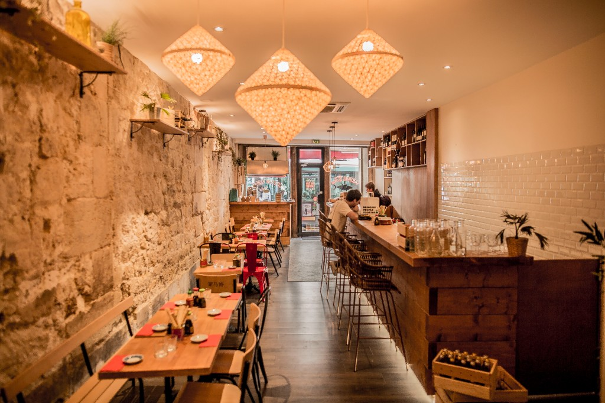
5restaurants
spécialisés
spécialisés
Créateurs français de baos
L’origine de Monsieur Bao
Avant les rayons, il y avait les tables, les paniers vapeur et des équipes passionnées par le geste juste.

Arthur a ouvert cinq restaurants dédiés aux dim sum et aux baos. Des adresses reconnues, notamment par Le Guide du Fooding, où les recettes et la cuisson vapeur ont été travaillées chaque jour.
Avec Clément et Cyril, l’idée devient Monsieur Bao : garder cette même exigence et rendre ces baos accessibles à la maison.
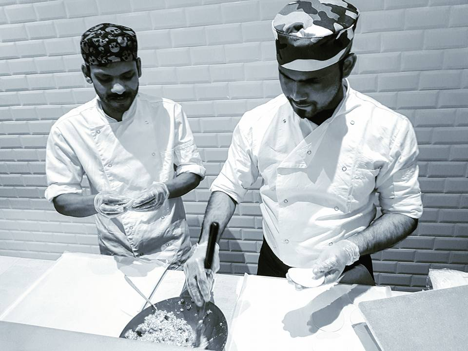
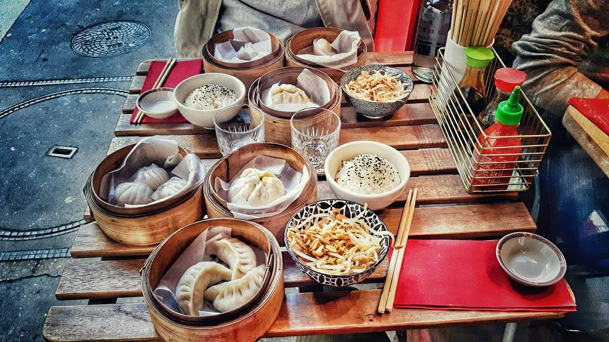
Des recettes testées en service, pensées pour être généreuses dès la première bouchée.
Le même geste précis, une fabrication française et une brioche qui reste moelleuse.
Des baos frais et surgelés prêts à rejoindre votre table en quelques minutes.
Notre pâte est préparée chaque jour et cuite à la vapeur pour une texture douce et nuageuse.
La vapeur fait gonfler le bao et préserve les saveurs, sans ajout de matière grasse.
Le menu Monsieur Bao
Des baos généreux, imaginés en restaurant et préparés avec des ingrédients qui ont du goût. À chacun son préféré.
La nouvelle collection à retrouver dans vos magasins : trois recettes, une brioche ultra-moelleuse et 6 baos par sachet.
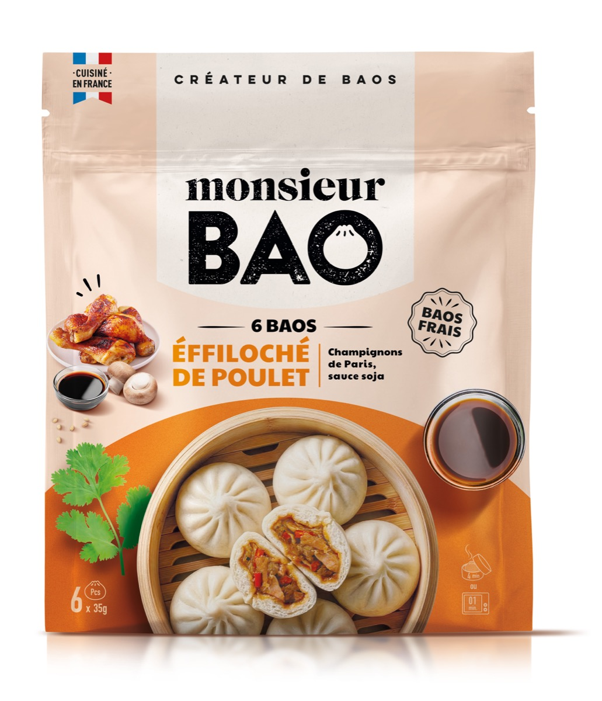
Champignons de Paris • sauce soja
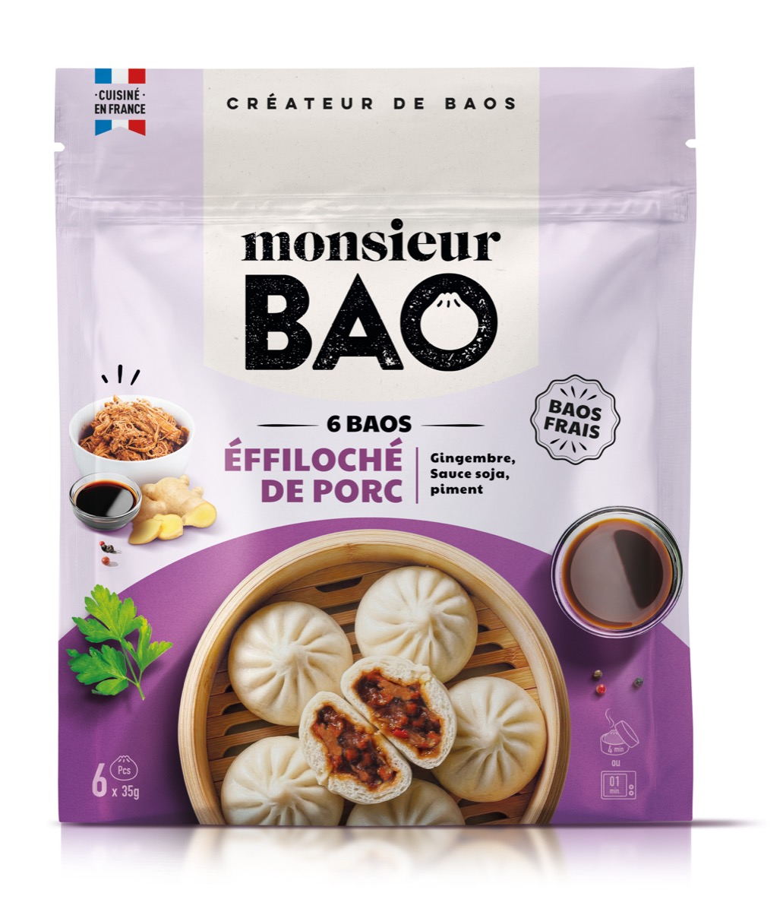
Gingembre • sauce soja • piment
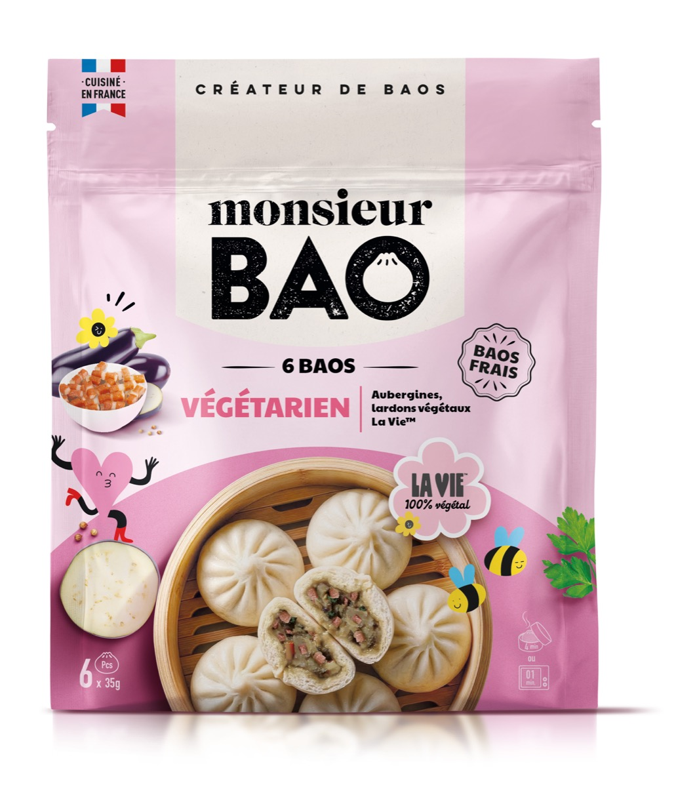
Aubergines • lardons végétaux La Vie
Les recettes iconiques de Monsieur Bao, à garder toujours sous la main.
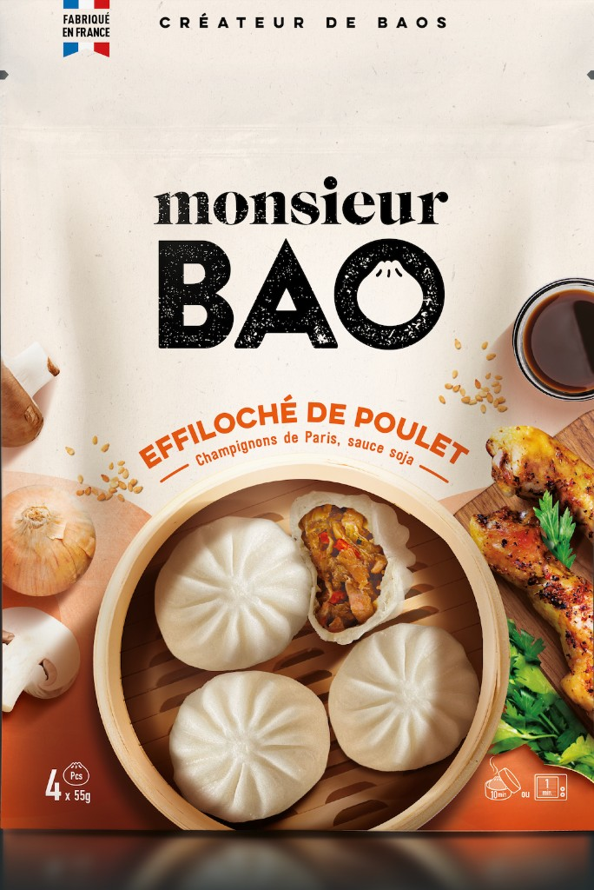
Champignons, sauce soja
4 × 55 g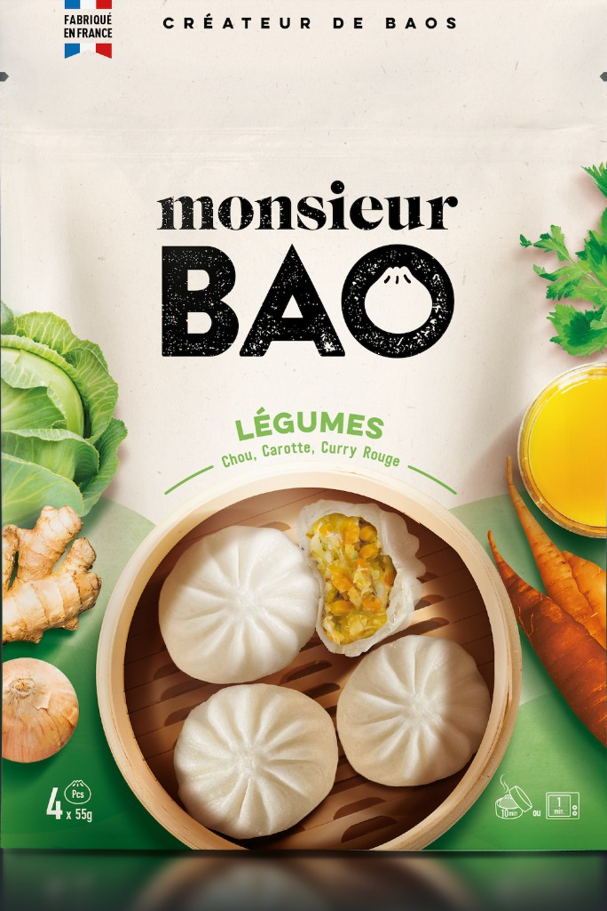
Choux, carotte, curry rouge
4 × 55 g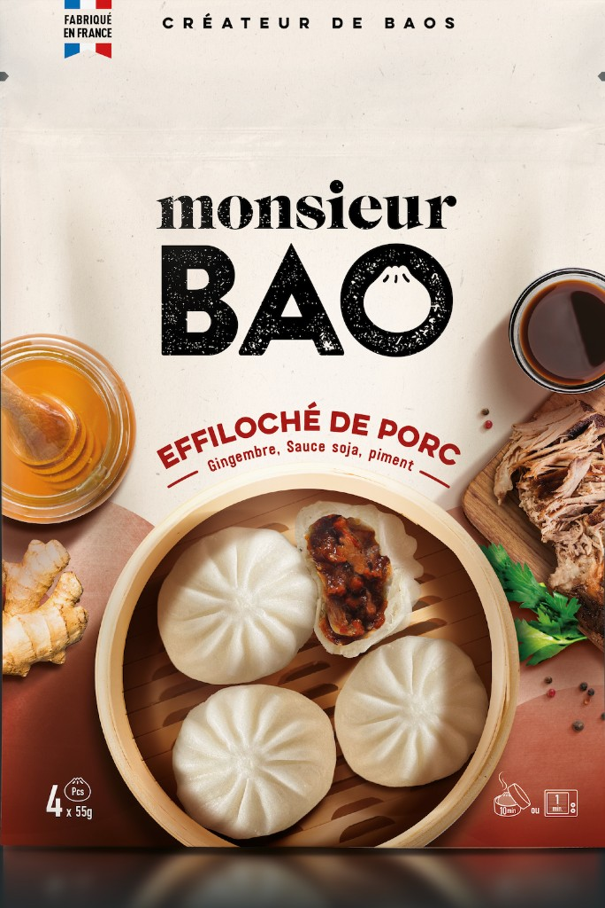
Gingembre, soja, piment
4 × 55 g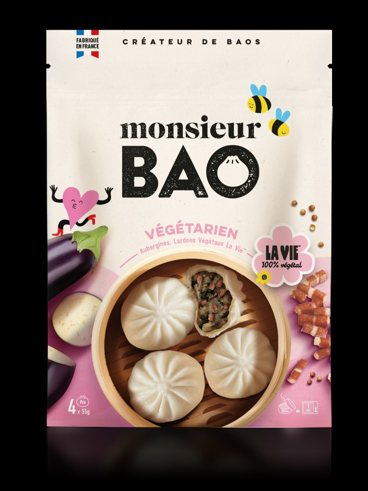
Aubergine, lardons végétaux
4 × 55 g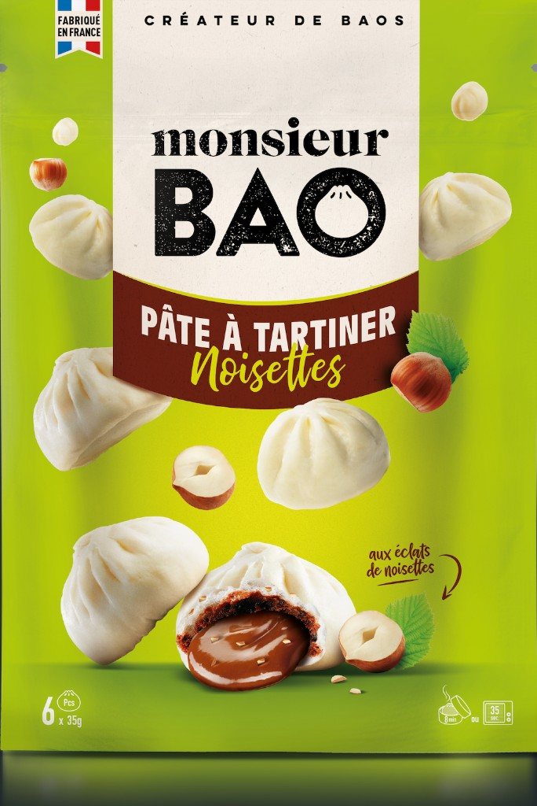
Aux éclats de cacahuètes
6 × 35 g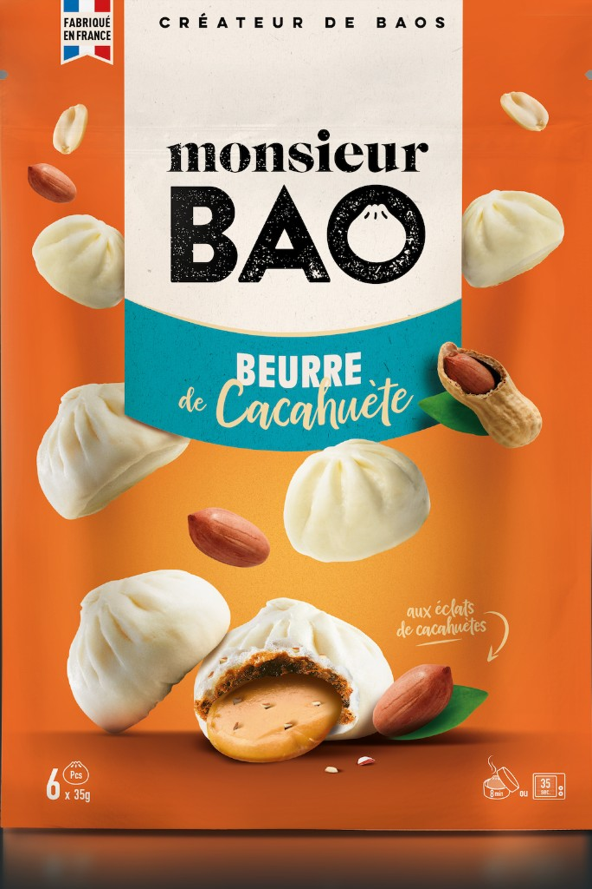
Aux éclats de noisettes
6 × 35 gNotre façon de faire
Du choix des ingrédients à la cuisson vapeur, chaque détail compte pour faire un bao simple, généreux et vraiment bon.
Notre pâte est préparée avec attention puis cuite à la vapeur pour rester légère, douce et ultra-moelleuse.
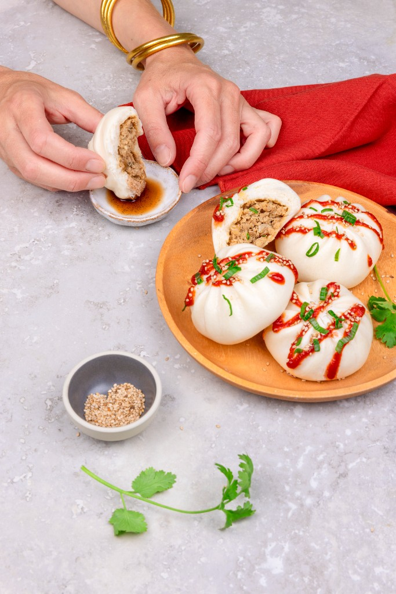
Nos baos sont fabriqués en France, avec des viandes françaises pour les recettes poulet et porc.
100% savoir-faire françaisUn format pratique et gourmand, prêt au micro-ondes en quelques secondes.
Nos baos sont disponibles au rayon surgelé de vos grandes surfaces. Restez connectés pour découvrir les points de vente près de chez vous.